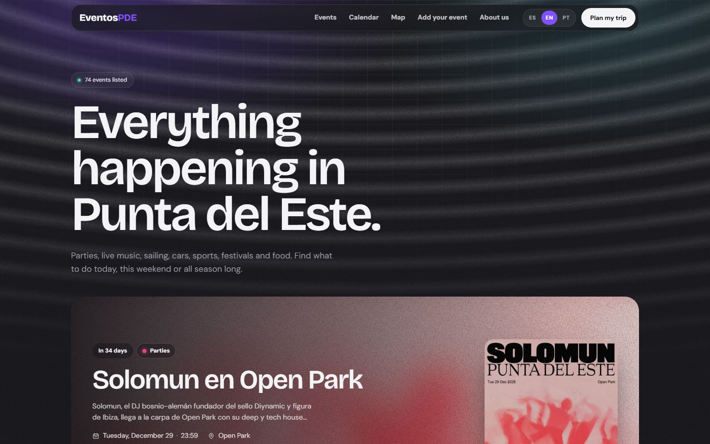
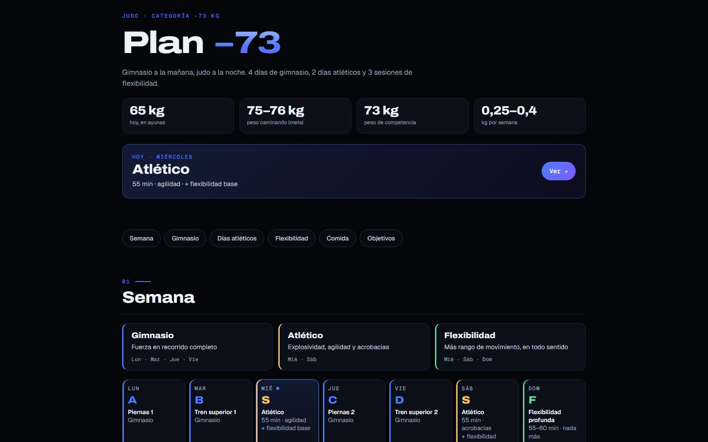

La agenda de Punta del Este. Marca, producto y negocio: calendario, mapa, planificador de viaje, en español, inglés y portugués, con páginas para Google que se generan solas.
eventospde.com ↗(Portfolio — 2026)
Atleta y coach. Construyo marcas, webs y video que se mueven.
MANU
−73(01) — Sobre mí
Me muevo en el tatami,
en el agua
y en la pantalla 
Soy Manu, de Uruguay, de una familia de atletas de alto rendimiento. Hago judo, surfeo, fui coach de musculación y preparación física, y guardavida privado. En paralelo diseño y programo webs, armo marcas desde cero, creé contenido durante un año y edito video seguido.
Todo lo que ves acá lo hice yo: idea, diseño, código, textos y lanzamiento.
(02) — Trabajo seleccionado
Trabajo05

El sitio de una asociación de artes marciales con historia desde 1983. Noticias, galería, horarios y contacto, pensado para que el club publique solo, sin tocar código.
Ver sitio ↗
Una app instalable para el grupo de judo: las 100 técnicas del Kodokan con video, progreso por cinturón, asistencia a clase, el dojo en vivo y vocabulario japonés con audio.
Abrir app ↗
Mi plan para competir en −73 kg: gimnasio, días atléticos, flexibilidad, comida y objetivos. Hecho para leerse en el gimnasio, desde el celular, entre serie y serie.
Ver plan ↗ ● Acceso privado
● Acceso privado
Mi centro de mando: entrenamiento, judo, cambio físico, hábitos, lectura, proyectos de video y contenido, sincronizado entre dispositivos. Es privado, pero existe, y lo uso todos los días.
Con contraseña ↗(03) — Lo que hago
-
01
Marcas
↗Construyo marcas desde cero: nombre, identidad, voz y el sistema para que crezcan. Eventos PDE empezó como una idea y hoy es una marca con su web, sus redes y su negocio.
-
02
Webs & producto
↗Sitios y apps a medida, sin plantillas. Diseño, código, textos y lanzamiento. Rápidos, pensados para el celular y fáciles de actualizar.
-
03
Edición de video
↗Edito video seguido: ritmo, cortes, color, sonido y subtítulos. Piezas cortas para redes y videos para marcas y deportistas.
-
04
Contenido
↗Creé contenido durante un año entero: idea, guion, grabación, edición y publicación. Sé lo que cuesta sostenerlo y cómo hacer que la gente se quede.
-
05
Preparación física
↗Fui coach de musculación y preparación física. Armo planes de fuerza, potencia y movilidad pensados para el deporte de cada uno, y los sigo semana a semana.
0año creando
contenido
contenido
0proyectos
en vivo
en vivo
0técnicas de judo
documentadas
documentadas
0idiomas en
Eventos PDE
Eventos PDE
Judo
Entreno para competir en −73 kg. El tatami me enseñó a caer, levantarme y leer al otro antes de que se mueva.
Surf
El mar no negocia. Paciencia, lectura de olas y saber cuándo remar fuerte y cuándo esperar.
Coach
Fui coach de musculación y preparación física: planificar, corregir la técnica y medir el progreso de otros, no solo el mío.
Guardavida
Fui guardavida privado: responsabilidad real, atención constante y reaccionar rápido cuando importa.
Familia
Toda mi familia es de atletas de alto rendimiento: salto con garrocha, 100 y 200 metros. En casa el deporte nunca fue un hobby.
Moverse
Gimnasio, días atléticos, acrobacias, flexibilidad. Todo lo que tenga que ver con moverse, me interesa.
Lo que aprendo entrenando lo llevo al trabajo: disciplina, constancia y no soltar hasta que salga.
(05) — Contacto
Hablemos
¿Tenés una marca, una web o un video en mente? Contame. Respondo rápido.
Escribime